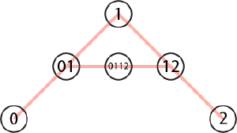
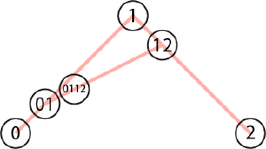
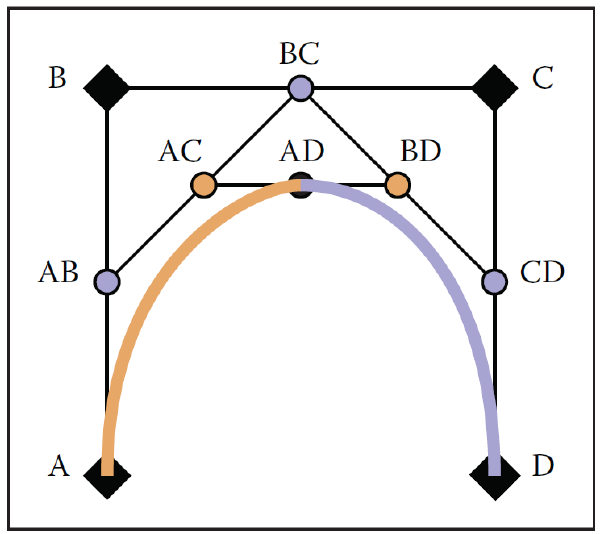

Page 15: Geometric Approaches to Beziers
Bézier curves will turn out to be polynomials of degree . If you have 4 points, the Bézier curve is a cubic polynomial. You can look up the basis functions, just like we had basis functions for the Hermite forms. Indeed, one way to derive Bézier curves is to choose polynomial forms with the correct properties.
But before we see the polynomial forms, we will look at how to construct Bézier curves geometrically. This will give you a sense of their mathematical beauty. Seeing the construction makes the properties of the curves obvious, and gives good intuition for the formulas. The construction also leads to practical algorithms since it gives us a fast way to divide the curve into two parts, so we can create divide-and-conquer algorithms.
This material lends itself to lecture/video presentation. You can look at the 2023 lectures, or watch The Beauty of Bezier Curves. But read through the page to make sure you can do these constructions yourself. They are not only elegant but also useful.
Part of 2023 Lecture 10 | Slides
(optional) Professor Gleicher made some videos at the whiteboard to explain the algorithms for Bézier curves. The The Beauty of Bezier Curves shows it much better, but this is useful for showing you what you would actually do when solving a problem yourself (like on an exam):
- de Casteljau 2 - Showing the algorithm for 3 points (a second degree curve)
- de Casteljau 3 - Showing the algorithm for 4 points (a third degree curve)
- de Casteljau 4 - Shows the connection between the geometric constructions and the polynomial forms
Box 1 and Box 2: The DeCasteljau Construction
Suppose we have a Bézier curve defined by points. I’ll just number the points 0, 1, 2, … The dimensionality of the points does not matter.
Suppose we want to evaluate the curve for a parameter value , where . What we do is:
- Between every consecutive pair of points, linearly interpolate the point of the way between the beginning and end.
- If there is more than 1 point left, repeat the process with the new set of points.
If we start with 2 points, this is a line segment (linear interpolation between the points).
If we start with 3 points, we first interpolate between points 0 and 1, and between 1 and 2. This gives us 2 new points (call them 01 and 12). Then we interpolate between 01 and 12, to get point 0112, which is our answer.
Here is a picture doing this for .

{kind=link}
We start by making point 01 halfway () between 0 and 1, and point 12 halfway between 1 and 2. Then, interpolating halfway between 01 and 12 gives us the answer. To evaluate , we use that value for the amount we interpolate along each line.

{kind=link}
If we start with 4 points, we first interpolate between points 0 and 1, 1 and 2, and between 2 and 3. This gives us 3 new points (call them 01, 12, and 23). Then we interpolate between these to get 0112 and 1223. Then we interpolate these two points to get the final answer.
Notice that we do a sequence of linear interpolations. Between each pair of points, we linearly interpolate.
A simple example
Here’s a simple example to work through. Suppose we have the points (0,0), (8,0), (16,8), (24,8). Let’s compute the position of the curve for .
I’ll do the x values first. I’ll write them as a list [0,8,16,24]. Then with each step, we take the value of the way between each pair. So, we get:
[4,12,20]
[8,16]
[12]
So we get the final x value as 12.
Try this yourself to get the y value. You should get 4.
Note that if we had a different value of , we would just take a different combination at each step. So, for example, if we wanted 3/4 (), each time we take the number 3/4 of the way between each pair, so:
[0,8,16,24]
[6,14,22]
[12,20]
[18]
And again, you can try y yourself. I get 6 3/4.
Seeing this on curves
Here is an animation where you can set to see what the construction does for 2, 3, 4 and 5 points. Move the slider to try different values of - the red dot is the computed amount.
view - look at the box and experiment with it
examine - look at the code for the box
edit - change the box's content
rubric - several steps are suggested in the rubric page - form elements on page in rubric
03-15-01.html 03-15-01.js
In this next box ( 03-15-02.js ) you can drag the points around to see what happens as the points move. Use shift-click to add points (they add at the end of the list), and ctrl-click (or meta-click on a Mac) to remove points.
view - look at the box and experiment with it
examine - look at the code for the box
edit - change the box's content
rubric - several steps are suggested in the rubric page - form elements on page in rubric
03-15-02.html 03-15-02.js
This method is a convenient way to compute the values of Bézier curves by hand (if you can’t remember, or don’t want to look up, the polynomial forms). It is sometimes a useful way to implement the curves. Understanding this algorithm is useful not only for intuition but also because it shows us how to divide curves (which we will see in a moment).
With the linear interpolations, many of the Bézier curve properties become clear. For example, because we always interpolate between points, we have to stay inside the points. The initial and final directions can be seen at the beginning and end of the process. Other properties can be shown in similar ways.
From DeCasteljau to Bernstein
It may not be obvious, but the construction above gives polynomial forms. The forms of the polynomials for Bézier curves are called Bernstein basis polynomials. They were developed for other purposes. Dr. Bézier (and his team) realized that they could use them to get curves with all the nice properties he needed.
There is an interesting history, but it seems like the two approaches (the geometric construction above and the use of polynomial forms) were developed independently by different groups around the same time (and both at French car companies!).
To see the equivalence, write out the expressions for the process. The line segment is easy. For the three-point case, the algebra is fairly easy. Compute points 01 and 12 as functions of 0,1,2 and u. Then compute 0112 using these two terms and u.
Note that these can be written nicely as basis functions. For each control point, there is a function of that tells us the weight on the control point for a given value of . For a value of , the resulting position is a linear combination of the control points (where the weights are determined by potentially non-linear functions of ).
Here is a video (de Casteljau 4) doing the derivation on the whiteboard. (optional)
Dividing Bézier Curves
The DeCasteljau construction also provides a method to divide a Bézier curve into two smaller Bézier curves, each with the same degree (and number of points) as the original.
To split a Bézier curve at the position , we perform the DeCasteljau construction to determine the position of the points for . The points for the first curve are the starting points of each line up to the new point (including the new point). The second curve starts at the new point. Its other points are the ends of all the line segments after it.
As an example, suppose we have a Bézier curve with control points (as in the previous box). If we divide the curve at value u, we get two new curves. One with points () and one with points ().
Figure 15.17 in Foundations of Computer Graphics shows this for a cubic (4-point) Bézier curve for value . The book’s notation uses A, B, C, and D for the points, so the old curve is (A,B,C,D) and the new curves are (A,AB,AC,AD) and (AD,BD,CD,D). Here it is again:
{kind=link}

Being able to divide Bézier curves into smaller pieces is very useful for implementing processing algorithms. We can start with a Bézier curve and divide it into smaller pieces until those pieces are small enough that we can approximate them with lines (or pixels). This gives effective algorithms for drawing them smoothly, intersecting them, etc.
Practice: To make sure you can do this process, take the quadratic Bézier curve with points (0,0), (0,8), (8,0) and divide it into two curves at the halfway point (). Your answer will be two sets of three points. Put your answer into the form. To motivate you, this is also practice for evaluating Bézier curves, and it is a good exam question.
Divide the curve (0,0), (0,8), (8,0) into two curves at u=.5 The first curve is: (0, 0), (0, 4), (2, 4) and the second is (2, 4), (4, 4), (8, 0)
Curve 1:
P1:
,
P2:
,
P3:
,
Curve 2:
P1:
,
P2:
,
P3:
,
Summary: Geometric Constructions of Bézier Curves
The DeCasteljau construction gives us a geometric way to create Bézier curves for any number of points. The geometric construction provides intuition as to why these curves have such useful properties. It also gives us an algorithm to divide the curve into pieces, which is very useful.
On the next page we will examine another way to look at Bézier curves—as low-order polynomials.
Next: Page 16 - Bézier Math